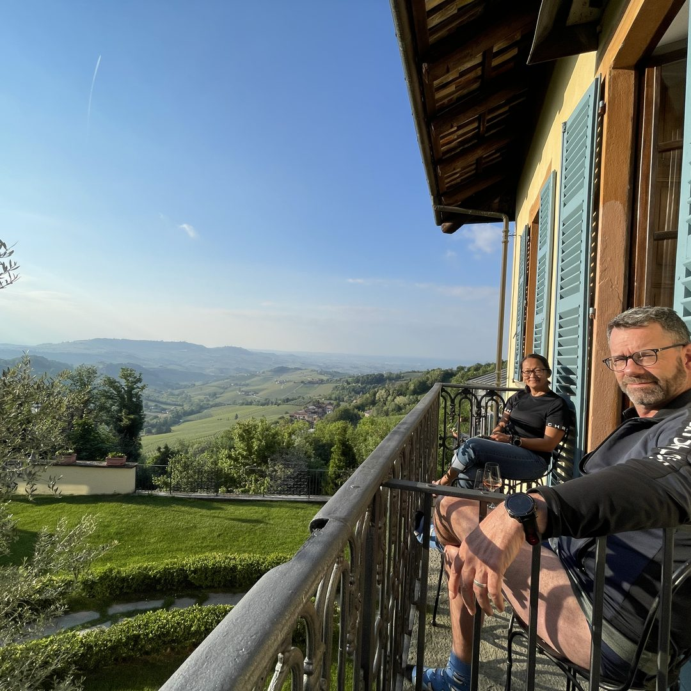

Inlägg 1Resan & historien


Från jakttorn till kod
Jag byggde mitt eget kök – med en AI
Bildtext
Det började med en frys full av vilt och en vinkällare som bara växte. Jag ville ha ordning – och bestämde mig för att bygga appen själv, tillsammans med en AI. 🍷
Idag samlar "Pers Kök & Vinkällare" allt: maten, viltet, vinet och skafferiet. Inte byggt av ett techbolag – byggt av en jägare och vinälskare vid köksbordet.
Vem hade trott det? 😅